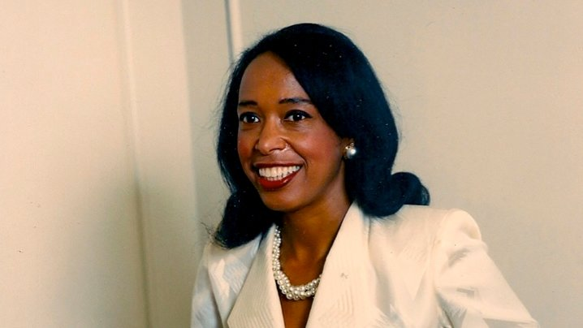

Biografia
Patricia Era Bath va néixer el 4 de novembre de 1942 a Harlem, Nova York. Des de petita s’interessava en la ciència però va haver de lluitar contra el racisme, la pobresa i el sexisme per poder aconseguir els seus somnis.
Quan encara anava a l’institut va aconseguir una beca de la National Science Foundation. Va començar la seva carrera universitària estudiant química al Hunter College i és va graduar l’any 1964. Posteriorment va traslladar-se a Washington per anar a la Howard University College of Medicine on l’any 1968 va rebre el títol de doctora en medicina.
Després treballà al Harlem Hospital Center, on el seu interès per l’oftalmologia va portar-la a fer la primera operació d’aquest tipus i va publicar la seva recerca sobre les ràtios elevades de ceguesa entre la minoria afroamericana.
Un cop finalitzada la seva educació Bath va treballar a l’UCLA i a la Universitat Charles R. Drew. Va ser durant aquests anys que va patentar les seves primeres invencions.
L’any 1978 va fundar l’institut Americà per la prevenció de la Ceguesa (APb).
L'any 1983 va assolir el títol de cap de la residència d'oftalmologia a la Universitat Charles R. Drew convertint-se en la primera dona a dirigir un departament d'aquest tipus en els EUA.
L’any 1993 Bath es va retirar de la UCLA i l’hi varen atorgar el títol de personal honorari, sent la primera dona en rebre aquest reconeixement.
Posteriorment, Bath va exercir de professora d’oftalmologia a la Howard Univeristy’s School of Medicine i a la St. Georges University, on també era professora de telemedicina.
Bath defensava l’ús de la telemedicina per poder entrenar i preparar millor els cirurgians.
Bath va morir el 30 de maig de l’any 2019, amb 76 anys per complicacions de càncer.